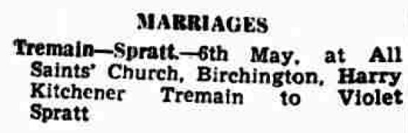
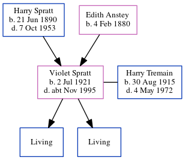

Harry Kitchener Tremain 1915 - 1972
[ Home ] | [ Calendar ] | [ Surnames Index ] | [ Errors ] | [ Family History ]Harry Tremain, the husband of Violet Lilian Spratt (the first cousin once-removed on the father's side of Nigel Horne), was born in Thanet, Kent, England on 30 Aug 19151,2,3 and. He married Violet (with whom he had 2 surviving children Richard Harry William and Colin L) at All Saints Church, Birchington, Kent, England on 6 May 19464.
During his life, he was living at 59 Westfield Road, Margate, Kent on 29 Sept 19391; at 10 Southwold Pl, Westgate, Kent in 19556; and at 17 Lymington Road, Westgate, Kent in 19655 and in 1972.
He died on 4 May 1972 in Thanet3.
Citations
- 1939 Register - Findmypast (was recorded at this address)
- England & Wales births 1837-2006 - Findmypast
- England & Wales deaths 1837-2007 - Findmypast
- England & Wales marriages 1837-2008 - Findmypast
- 1965 Kelly's Thanet Directory
- 1955 Kelly's Thanet Directory
Media
Harry Tremain - probate

1965 Kelly's Thanet Directory

1955 Kelly's Thanet Directory

Thanet Advertiser - 17 May 1946

England & Wales deaths 1837-2007 - BMD/D/1972/2/AZ/001190/035
England & Wales births 1837-2006 - BMD/B/1915/4/AZ/001337/069
England & Wales marriages 1837-2008 - BMD/M/1946/2/AZ/001466/065
1939 Register - TNA/R39/1751/1751G/010/10
Royal Artillery attestations 1883-1942 - GBM/ROYALART/416797
World War 2 Allies Collection - WW2/03446683
Family Tree
Map
Generated by ged2site. Last updated on Jul 3, 2024
Known Issues
Residence record for 1972 contains no citation
Listed in the residence for 1955, but spouse Violet Spratt is not
Listed in the residence for 1965, but spouse Violet Spratt is not
No records of living with anyone